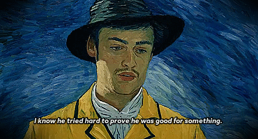

I know you’re feeling disappointed right now, like things didn’t turn out the way you hoped they would.
It’s hard when reality falls short of our expectations, and it’s natural to feel let down. It’s okay to acknowledge that pain and give yourself the space to feel it.
But remember, disappointment is just a detour, not a dead end. It doesn’t mean you’ve failed, and it doesn’t mean that better things aren’t still ahead.
Sometimes, the path we’re on needs to change direction to lead us to something even better than we imagined.
Take this time to regroup, reflect, and recharge. Disappointment can teach us valuable lessons, even if they’re hard to see in the moment.
What you’re going through now can help shape you into someone even stronger and more resilient.
Don’t lose hope. Keep believing in yourself and your journey. There are new opportunities waiting, and sometimes the best things in life come after we’ve overcome the toughest challenges.
You have the strength to turn this disappointment into a stepping stone for something greater.

BACK HOME